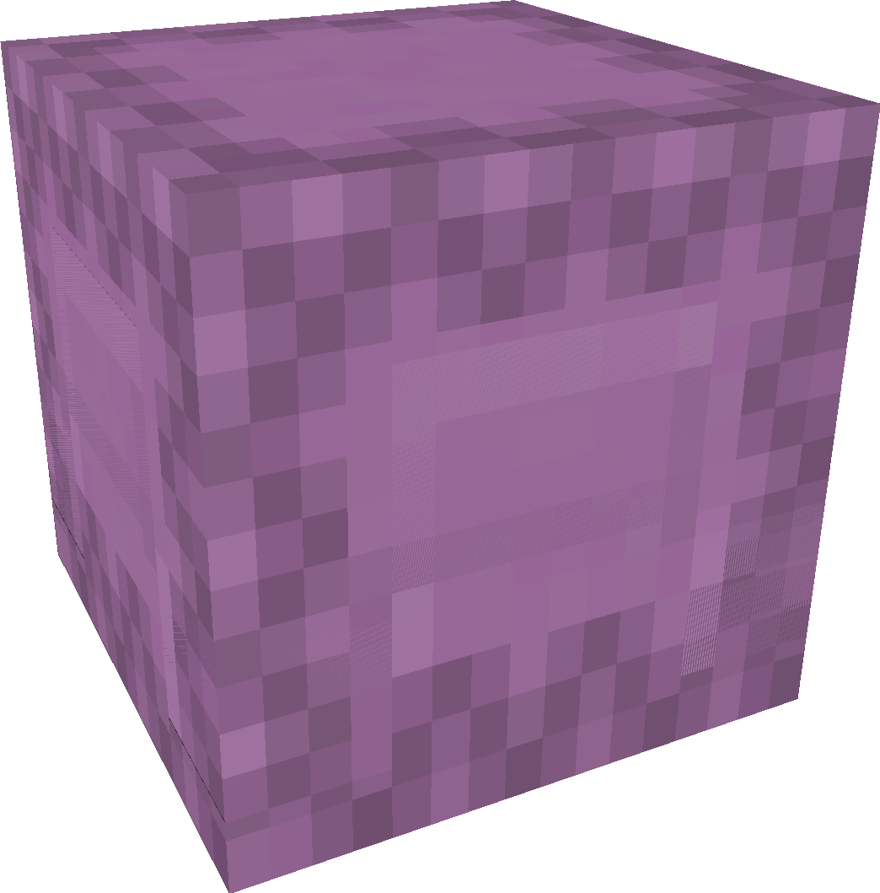

Bem-vindo(a) ao Sobre Mim
Esta é a dimensão do vazio, das cidades flutuantes e dos dragões! É onde ficam as coisas mais malucas que você já viu, exatamente como a minha vida.
Quem sou eu?

Sinceramente? Não tenho ideia de quem sou! A cada dia estou descobrindo algo novo. Às vezes me sinto super feliz, às vezes meio triste, uma verdadeira montanha-russa. Ainda não sei com o que quero trabalhar, mas de uma coisa tenho certeza sou apaixonada por esse meio caótico da programação. Combina certinho com os meus neurônios!
Coisas que eu gosto
Filmes & Séries
Para maratonar até a madrugada.
Músicas
Não garanto que são boas, mas eu gosto.
Jogos
Não conheço muitos, mas me divirto.
Animais
Bichinhos fofos deixam o dia melhor.
Comidas
Porque comer bem é uma arte.
Flores & Plantas
Um pouco de verde pra relaxar.